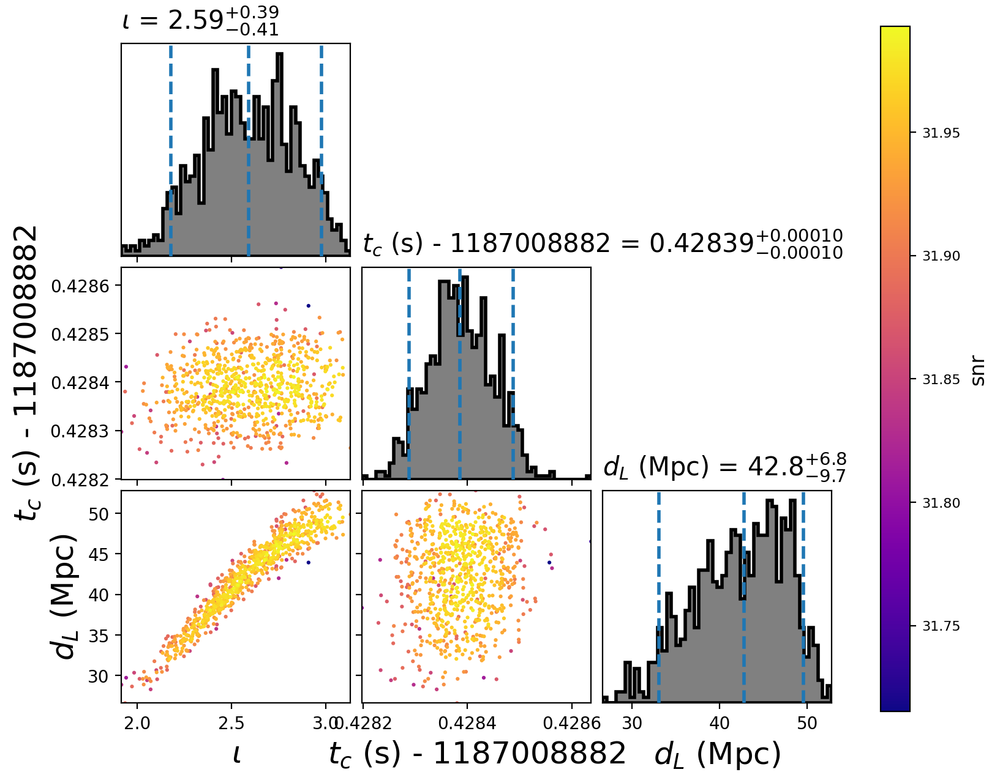

Using the single template model¶
The single template model is useful for when you know all the intrinsic parameters of your signal (say the masses, spins, etc of a merger). In this case, we don’t need to recalculate the waveform model to sample different possible extrinsic parameters (i.e. distance, sky location, inclination). This can greatly speed up the calculation of the likelihood. To use this model you provide the intrinsic parameters as fixed arguments as in the configuration file below.
This example demonstrates using the single_template model with the
emcee_pt sampler. First, we create the following configuration file:
[model]
name = single_template
#; This model precalculates the SNR time series at a fixed rate.
#; If you need a higher time resolution, this may be increased
sample_rate = 32768
low-frequency-cutoff = 30.0
[data]
instruments = H1 L1 V1
analysis-start-time = 1187008482
analysis-end-time = 1187008892
psd-estimation = median
psd-segment-length = 16
psd-segment-stride = 8
psd-inverse-length = 16
pad-data = 8
channel-name = H1:LOSC-STRAIN L1:LOSC-STRAIN V1:LOSC-STRAIN
frame-files = H1:H-H1_LOSC_CLN_4_V1-1187007040-2048.gwf L1:L-L1_LOSC_CLN_4_V1-1187007040-2048.gwf V1:V-V1_LOSC_CLN_4_V1-1187007040-2048.gwf
strain-high-pass = 15
sample-rate = 2048
[sampler]
name = emcee_pt
ntemps = 4
nwalkers = 100
niterations = 300
[sampler-burn_in]
burn-in-test = min_iterations
min-iterations = 100
[variable_params]
; waveform parameters that will vary in MCMC
tc =
distance =
inclination =
[static_params]
; waveform parameters that will not change in MCMC
approximant = TaylorF2
f_lower = 30
mass1 = 1.3757
mass2 = 1.3757
#; we'll choose not to sample over these, but you could
polarization = 0
ra = 3.44615914
dec = -0.40808407
#; You could also set additional parameters if your waveform model supports / requires it.
; spin1z = 0
[prior-tc]
; coalescence time prior
name = uniform
min-tc = 1187008882.4
max-tc = 1187008882.5
[prior-distance]
#; following gives a uniform in volume
name = uniform_radius
min-distance = 10
max-distance = 60
[prior-inclination]
name = sin_angle
For this example, we’ll need to download gravitational-wave data for GW170817:
wget -nc https://dcc.ligo.org/public/0146/P1700349/001/H-H1_LOSC_CLN_4_V1-1187007040-2048.gwf
wget -nc https://dcc.ligo.org/public/0146/P1700349/001/L-L1_LOSC_CLN_4_V1-1187007040-2048.gwf
wget -nc https://dcc.ligo.org/public/0146/P1700349/001/V-V1_LOSC_CLN_4_V1-1187007040-2048.gwf
By setting the model name to single_template we are using
SingleTemplate.
Now run:
pycbc_inference \
--config-file `dirname "$0"`/single.ini \
--nprocesses=4 \
--output-file single.hdf \
--seed 0 \
--force \
--verbose
This will run the emcee_pt sampler. When it is done, you will have a file called
single.hdf which contains the results. It should take about a minute or two to
run.
To plot the posterior distribution after the last iteration, run:
pycbc_inference_plot_posterior \
--input-file single.hdf \
--output-file single.png \
--z-arg snr
This will create the following plot:
{kind=link}
The scatter points show each walker’s position after the last iteration. The points are colored by the log likelihood at that point, with the 50th and 90th percentile contours drawn.